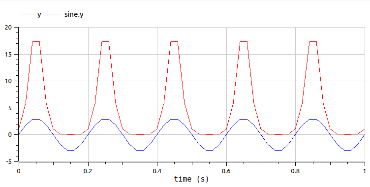

Note
Go to the end to download the full example code.
Export a function as FMU#
otfmi.FunctionExporter enables to export OpenTURNS functions as FMUs. The
main interest of this class is to use OpenTURNS metamodels in a simulation environment.
Currently, the inclusion of a metamodel in OpenModelica GUI has been performed once (see this paper).
FMU generation#
First, we create the OpenTURNS function to export as FMU. This example being solely a demonstrator, we consider a very simple exponential function.
import openturns as ot
import otfmi
import tempfile
from os.path import join
func = ot.SymbolicFunction(["x"], ["exp(x)"])
inputPoint = [2.0]
print(func(inputPoint))
[7.38906]
We create the FMU constructor and the folder in which save the FMU:
fmuExporter = otfmi.FunctionExporter(func)
fmu_path = join(tempfile.mkdtemp(), "myExponential.fmu")
print(fmu_path)
/tmp/tmp62s6gvk3/myExponential.fmu
We export the OpenTURNS function as a Model Exchange FMU. The counterpart is to export as CoSimulation FMU (embeds a solver). Another option would be to export the function via pythonfmu (see the “mode” keyword) allowing export of temporal functions (not a concern here for our function).
fmuExporter.export_fmu(fmu_path, fmuType="me")
Note
The export requires CMake build system, a C compiler (Visual Studio or GCC for instance), and the OpenModelica compiler OMC.
Simple as it looks, this function actually does the following :
write a C-wrapper for the OpenTURNS function,
write a Modelica model calling the C-wrapper as External function,
export the Modelica model as FMU using OpenModelica compiler.
Note
To retrieve only the Modelica model, see here.
Warning
The path to the C-wrapper is hard-coded in the model & in the FMU.
FMU validation#
We import the in OpenModelica GUI. We connect the wrapper to an input sine signal (Modelica.Blocks.Sources.Sine) and to an output block (Modelica.Blocks.Interfaces.RealOutput):

We simulate the model on 1 second, with 50 time steps. We can verify that y output corresponds to the exponential of the sine signal.
{kind=link}
Warning
Compared to native Modelica functions, the included OpenTURNS function is slow. Using the FMU, 11 seconds of simulation were required for 50 time steps (i.e. 50 function calls).
Total running time of the script: (0 minutes 4.196 seconds)